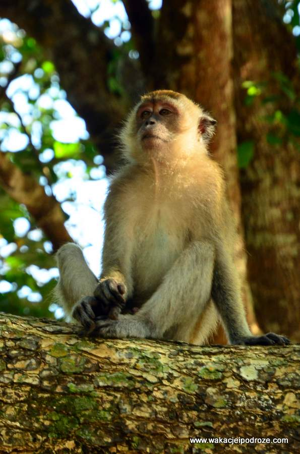

Lasy równikowe są siedliskiem około 40% poznanych lądowych gatunków roślin i zwierząt
Zajmują niespełna 6% powierzchni Ziemi
Nazywane są zielonymi płucami Ziemi
Ze wszystkich ekosystemów lądowych lasy równikowe wytwarzają najwięcej tlenu i pochłaniają najwięcej dwutlenku węgla
Nie wszystkie gatunki zamieszkujące las są poznane, codziennie odkrywa się nowe
Nie ma tam pór roku
Najwyższe tam drzewa osiągają więcej niż 60 metrów wysokości

Czasomierz
Działanie człowieka bardzo mocno wpływa na lasy równikowe. Co się dzieje w ciągu 5 sekund?.
Włącz licznik i policz do 5
Wróć do strony głównej